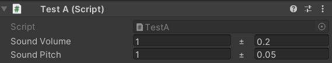

Des sales System.Types
[Utilise Logiked_Source]
Ici quelque types utiles pour le développement de vos jeux. Pour plus de détail, réferez vous à la doc.
vfloat
Un float avec une variation aléatoire intégrée.

Note: actuellement le système de random utilisé est UnityEngine.Random, de plus la valeur du float est recalculée à chaque fois que le float est cast. Enffonction des besoins bientot on aura peut-être la possibilité de
- préciser une seed/Système de random ?
- limiter le random à 1 seule initialisation ?
On verra
GameTimer
Classe qui permet de gérer un temps d'attente défini.
- Permet de gerer des interpolation/animation d'une valeur (Lerp/Slerp...) avec des Actions appelés à chaque frames
- Appeler un callback aprés un certain temps
- Dépendant du TimeScale (ou pas[wip])
- [WIP] Mettre en pause selon des parametres du jeu (menu de pause, cinématique, etc..)
Note: voir @{logiked.source.utilities.TimerExtention} pour des fonctions utiles que vous pouvez utiliser même sur des timer pas assignés.
[WIP] InputStorage
Permet de faire passerelle entre l'input system 2.0 unity et le fonctionnement de la version 1.0. Pouvoir faire des if(KeyPressed) c'est quand même vraiment utile parfois au lieu des events.